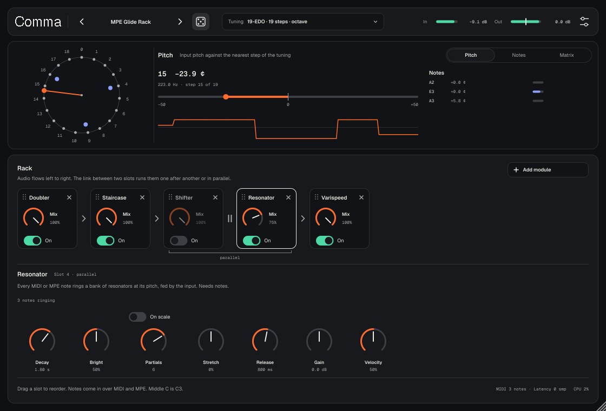
Comma — rack для экспериментов с высотой тона: микротональность (EDO, чистый строй, строи Scala) и MPE-глайды. Восемь модулей ставятся в цепочку, параллельно или вперемешку, и все слушаются одного строя.
Комма — крошечный интервал, на котором держится вся микротональная музыка: разница между двенадцатью чистыми квинтами и семью октавами. Comma про такие расстояния — от пары центов дублера до тритавы Болена — Пирса.
.scl + .kbm или строй от мастера MTS-ESP.Comma-macOS.zip со страницы Releases и распакуйте.bash ~/Downloads/Comma-macOS/install-mac.sh. Скрипт кладёт Comma.vst3, Comma.component и Comma.clap в ~/Library/Audio/Plug-Ins и снимает карантин macOS (плагин подписан ad-hoc, без сертификата Apple).| DAW | Что сделать |
|---|---|
| Logic Pro | Comma — Audio Unit типа Music Effect: на аудиодорожке он в меню MIDI-controlled Effects. Ноты — с любой MIDI-дорожки: выберите её в меню Side Chain в заголовке окна плагина. |
| Ableton Live | VST3 или AU на аудиодорожке. На MIDI-дорожке: MIDI To → дорожка с Comma → Comma. Для MPE-контроллера включите MPE Mode в контекстном меню устройства Comma. |
| Bitwig, Reaper | CLAP или VST3; ноты — обычной маршрутизацией MIDI в эффект. |
Модули без нот (Doubler, Staircase, Shifter, Varispeed, Spectral, Harmonizer, Autotune по строю) звучат и без этого.
Нужен Mac с macOS 11 или новее, Apple Silicon или Intel.
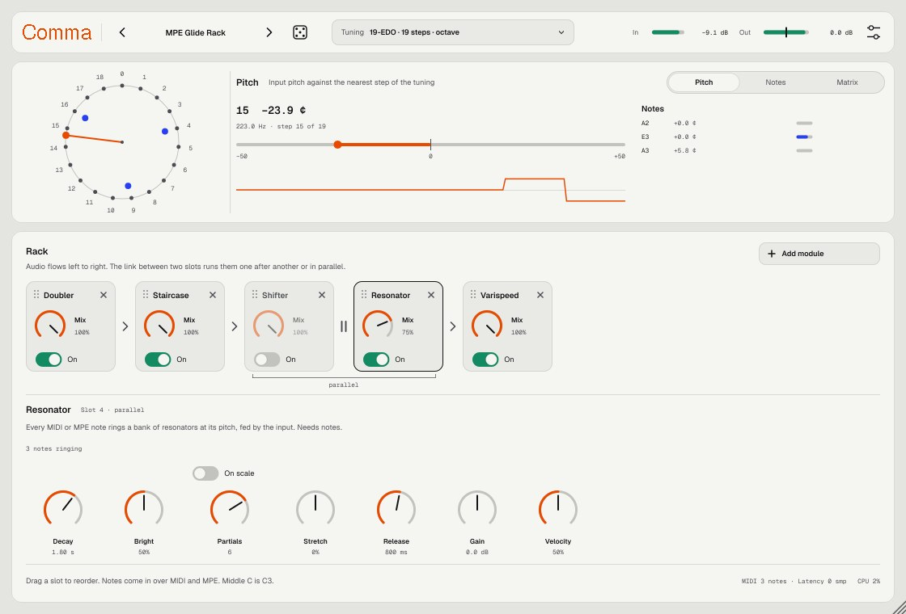
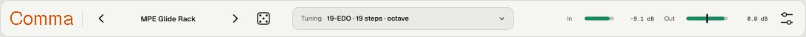
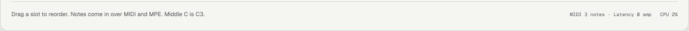
Окно масштабируется от 50 до 200 %: потяните за угол или выберите размер в настройках → Size.
Строй задаёт ступени, к которым тянутся Snap и автотюн, на которых шагают Staircase и Doubler, по которым настраиваются партиалы резонатора и спектр. Он один на весь rack.
| Источник | Что это |
|---|---|
| 12-EDO | Обычный равномерный строй, A4 = 440 Гц (меняется в Reference). |
| N-EDO | N равных ступеней в октаве: 5, 7, 10, 15, 17, 19, 22, 24, 31, 41, 53, 72 или любое от 1 до 96 (Other…). Клавиши идут подряд по ступеням. |
| Ratios | Свои ступени отношениями или центами: 1/1 9/8 5/4 4/3 3/2 5/3 15/8 2/1. Последняя — период (не обязательно октава: 3/1 — тритава). Готовые: 5-limit и 7-limit just intonation, гармоники 8–16. |
| Scala | Файл .scl, по желанию — раскладка клавиатуры .kbm (опорная нота и частота, пропущенные клавиши). Файлы сохраняются внутри проекта и пресета. |
| MTS-ESP | Строй от мастера MTS-ESP (например, бесплатного MTS-ESP Mini). Без мастера — 12-EDO и сообщение в подвале. |
Root — с какой ноты начинается шкала (C … B, для EDO, отношений и .scl без .kbm); частота корня берётся из 12-EDO от Reference (A4 = 415 … 444 Гц).
| Единица | Как считается |
|---|---|
| ¢ (центы) | Сотая полутона 12-EDO. 1200 ¢ — октава. |
| Ratio | Чистое отношение из списка от 1/2 до 2/1: 16/15, 9/8, 7/6, 5/4, 11/8, 3/2, 7/4, 15/8 … Ниже 1/1 — вниз. |
| Steps | Шаги текущего строя. Если модуль знает высоту входа (Harmonizer, Autotune, Resonator, Spectral) — это настоящие ступени вокруг неё. Если не знает (Doubler, Staircase) — средний шаг строя: период / число ступеней. В N-EDO это одно и то же. |
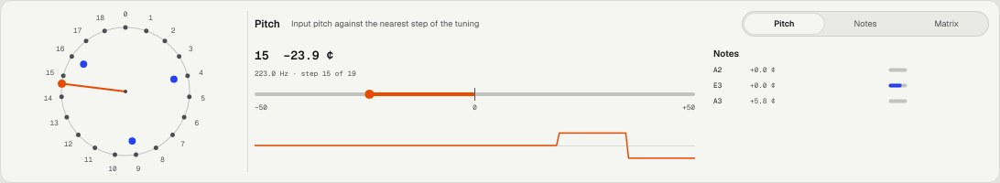
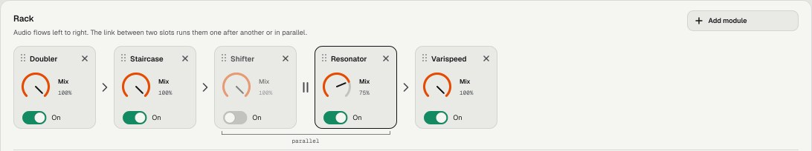
› — следующий слот обрабатывает выход предыдущего; ‖ — оба слушают один вход, их выходы смешиваются. Под параллельной группой — скобка «parallel».Модули с анализом в режиме Quality добавляют задержку: Harmonizer и Autotune (PSOLA) — около 50 мс, Spectral — 2048 семплов (1024 в Low latency). Comma сообщает хосту общую задержку: последовательные слоты складываются, параллельные выравниваются по самому медленному. Bypass задержку не меняет, поэтому выключение слота не сдвигает звук.
⌘Z / ⇧⌘Z или настройки → Undo / Redo: и ручки, и состав rack'а, и строй. В некоторых DAW ⌘Z перехватывает сам хост — тогда пользуйтесь меню.
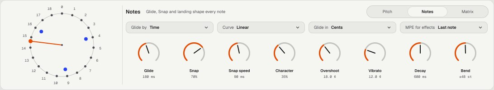
Comma понимает обычный MIDI и MPE: сообщение конфигурации MCM, member channels, бенд на каждую ноту (по умолчанию ±48 полутонов, у мастер-канала ±2), давление (pressure), CC74 (slide), скорость нажатия (strike) и отпускания (lift). Диапазон бенда меняется ручкой Bend или сообщением RPN 0 от контроллера. До 16 голосов.
| Ручка | Что делает | Диапазон |
|---|---|---|
| Glide | Время скольжения от предыдущей ноты к новой. | 0 – 3 с |
| Glide by | Time — за заданное время; Rate — с постоянной скоростью (ручка Rate). | Time / Rate |
| Rate | Скорость скольжения. | 10 – 20000 ¢/с |
| Curve | Linear, Fast start (быстро в начале), Slow start (медленно в начале). | 3 формы |
| Glide in | Скольжение линейно в центах (ровно по слуху) или в герцах (быстрее внизу). | Cents / Hertz |
| Snap | Магнит: пока высота движется, она свободна; остановилась — притягивается к ближайшей ступени строя. | 0 – 100 % |
| Snap speed | Как быстро притягивает. | 5 – 1000 мс |
| Character | От непрерывного портаменто (0 %) к глиссандо по ступеням строя (100 %). | 0 – 100 % |
| Overshoot | Посадка: перелёт за ступень, когда высота останавливается. | 0 – 50 ¢ |
| Vibrato | Посадка: затухающее вибрато на ступени. | 0 – 50 ¢ |
| Decay | За сколько затухает вибрато посадки. | 50 мс – 3 с |
| Bend | Диапазон бенда member-каналов (и обычного MIDI). | ±1 – ±96 полутонов |
| MPE for effects | Чем вести модули без голосов: последней нотой, самой высокой или средним по держащимся. | Last / Highest / Average |
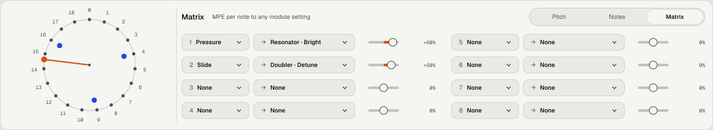
Восемь строк «источник → ручка модуля, сила». Источники — измерения MPE: Strike, Lift, Pressure, Slide, Bend, Note. Назначение — любая ручка любого модуля, включая Mix (меню сгруппировано по модулям). Сила −100 … +100 % — доля полного хода ручки; двойной клик — 0.
Под rack'ом — ручки выбранного модуля. У интервала сверху переключатель единиц: ¢, Ratio, Steps — ручка под ним меняется. У задержки и Shifter — переключатель Sync.
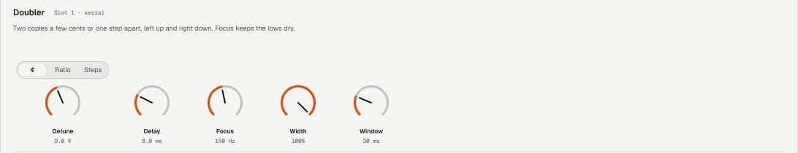
Две копии: левая выше на интервал, правая ниже (как MicroShift). Линия задержки с двумя головками, сдвинутыми на пол-окна, окно Ханна.
| Detune / Ratio / Steps | Интервал: 0 – 100 ¢, отношение или 0 – 12 шагов строя (средним шагом). | 9 ¢ |
| Delay | Задержка копий. | 0 – 30 мс |
| Focus | Фильтр высоких частот на обработанном сигнале: низ остаётся сухим и плотным. | 20 – 2000 Гц |
| Width | 0 % — копии по центру, 100 % — левая и правая разведены. | 0 – 100 % |
| Window | Окно шифтера: короче — чётче, длиннее — мягче. | 20 – 60 мс |
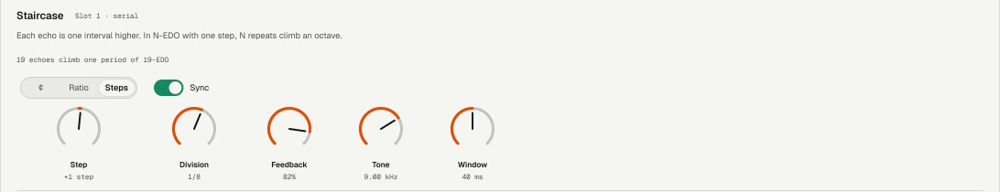
Питч-шифтер в петле обратной связи задержки: каждое эхо на интервал выше (или ниже). В N-EDO с шагом +1 за N повторов набирается октава.
| Step | Интервал каждого повтора: −1200 … +1200 ¢, отношение или −24 … +24 шага. | +1 шаг |
| Sync / Time / Division | Время в мс или деление такта (1/1 … 1/32, с точкой и триолями). | 20 – 2000 мс |
| Feedback | Сколько повторов. | 0 – 95 % |
| Tone | Фильтр в петле: каждый повтор темнее. | 500 – 20000 Гц |
| Window | Окно шифтера. | 20 – 60 мс |
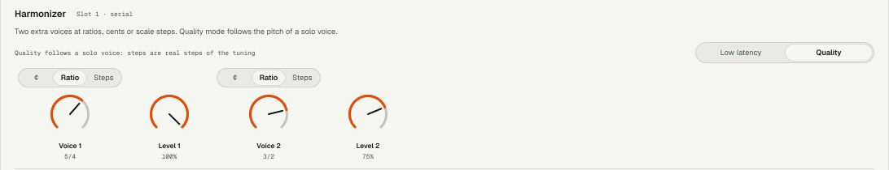
Два голоса на интервалах. Quality — PSOLA по высоте соло-голоса (точнее, задержка ~50 мс); Low latency — линия задержки (без задержки, работает и с аккордами; на соло-голосе окно подгоняется под его период). Шаги строя в обоих режимах — настоящие ступени вокруг высоты голоса, если она определилась.
| Voice 1, Voice 2 | Интервалы: −1200 … +1200 ¢, отношение (по умолчанию 5/4 и 3/2) или −24 … +24 шага. | 5/4, 3/2 |
| Level 1, Level 2 | Громкость голосов. | 0 – 100 % |
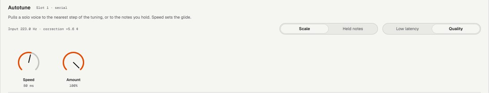
Определяет высоту монофонического голоса (YIN) и подтягивает её к ближайшей ступени строя или к ноте, которую вы держите (Held notes, в любой октаве). Режимы — как у Harmonizer.
| Speed | Скорость подтяжки: 0 — мгновенно (ступеньками), больше — плавный глайд. | 0 – 500 мс |
| Amount | Доля поправки. | 0 – 100 % |
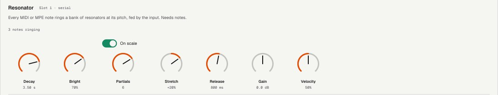
Каждая нота MIDI / MPE включает банк двухполюсных резонаторов на своей высоте — с бендом, Glide и Snap. На вход подходит любое аудио: барабаны, шум, синтезатор. Без нот резонатор молчит.
| Decay | Звон каждого резонатора (до −60 dB). | 20 мс – 8 с |
| Bright | Громкость верхних партиалов. | 0 – 100 % |
| Partials | Число партиалов на ноту. | 1 – 8 |
| On scale | Партиалы выше первого подтягиваются к ступеням строя: колокола, которые звучат «в строе». | вкл / выкл |
| Stretch | Растяжение (+) или сжатие (−) партиалов. | −50 … +50 % |
| Release | Затухание после отпускания ноты. | 20 мс – 8 с |
| Gain | Громкость резонатора. | −24 … +24 dB |
| Velocity | Насколько сила нажатия влияет на громкость. | 0 – 100 % |
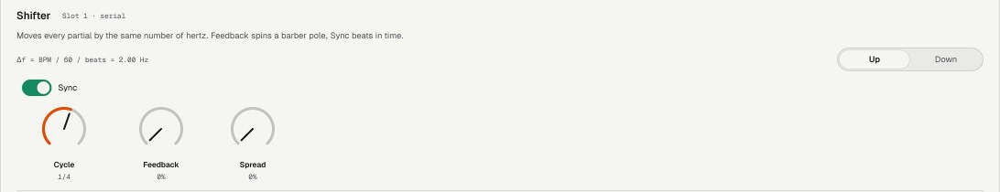
Частотный сдвиг: однополосная модуляция через фильтр Гильберта (пара цепочек allpass). Все партиалы сдвигаются на одно число герц — гармонии становятся металлическими, малые сдвиги дают биения и фейзинг.
| Shift | Сдвиг в герцах. | −2000 … +2000 Гц |
| Sync / Cycle | Биения в темп: Δf = BPM / 60 / доли цикла. Цикл 1/4 при 120 BPM — 2 Гц. | 4 bars … 1/32 |
| Direction | Вверх или вниз (при Sync). | Up / Down |
| Feedback | Обратная связь: бесконечно поднимающийся или опускающийся звук (barber-pole). | 0 – 95 % |
| Spread | Правый канал сдвигается в другую сторону. | 0 – 100 % |
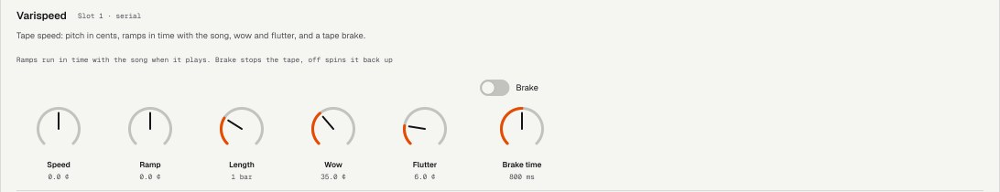
| Speed | Постоянный сдвиг высоты. | −1200 … +1200 ¢ |
| Ramp, Length | Рампа высоты по темпу: пила от 0 до Ramp за Length (4 bars … 1/32), когда песня играет. | −1200 … +1200 ¢ |
| Wow, Flutter | Медленное (0.7 Гц) и быстрое (~9 Гц) дрожание ленты. | 0 – 100 ¢, 0 – 30 ¢ |
| Brake, Brake time | Тормоз ленты: включите — лента останавливается, выключите — разгоняется и сшивается с живым сигналом. Удобно автоматизировать. | 50 мс – 4 с |
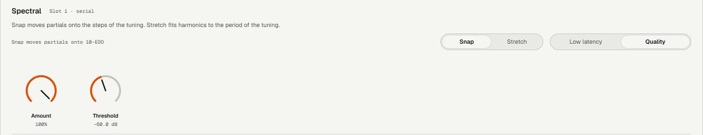
STFT, поиск пиков спектра и ресинтез фазовым вокодером. Snap переносит каждый партиал на ближайшую ступень строя. Stretch растягивает гармоники так, чтобы 2:1 стало периодом строя (идея Сетареса: тембр звучит консонансно в своём строе) — нужен строй с периодом не в октаву, например тритава Болена — Пирса.
| Amount | Доля переноса. | 0 – 100 % |
| Threshold | Пики тише порога не трогаются. | −90 … −20 dB |
| Latency | Quality — окно 2048 семплов, Low latency — 1024. | 2048 / 1024 |
Случайные Mix и ручки модулей, стоящих в rack'е, в безопасных пределах: Mix не ниже 40 %, обратная связь не выше 75 %, интервалы гармонайзера — из консонансов. Не трогает громкость выхода, состав rack'а, bypass, строй, нотный слой, матрицу, режимы задержки, Sync и тормоз. Настройки → Randomizer: Mix, Module settings и (по умолчанию выключено) порядок слотов и параллельные группы.
Шаблоны задают состав rack'а, строй и все ручки; громкость выхода и загруженные файлы Scala не трогают.
| Шаблон | Что внутри |
|---|---|
| Init | Пустой rack, 12-EDO. |
| Micro Double, Wide Detune | Дублер на 9 ¢; шире — с медленным частотным сдвигом. |
| 19-EDO Stairs, Octave in Seven, Falling Stairs | Эхо по ступеням 19-EDO, 7-EDO и вниз по полутонам. |
| Barber Pole, Tempo Beats | Бесконечный подъём и биения раз в долю. |
| Just Choir, Septimal Fifths | Гармонайзер на 5/4 + 3/2 в чистом строе; 7/4 и 3/2. |
| Hard Tune, Glide Tune 31 | Мгновенный автотюн; плавный — в 31-EDO. |
| Ringing Strings, Scale Bells, MPE Glide Rack | Резонатор на нотах; колокола в 17-EDO; резонатор с Glide, Snap, посадкой и матрицей. |
| Tape Wobble, Tape Stop, Pitch Dive | Лента: дрожание, тормоз (автоматизируйте Brake), рампа на октаву вниз за такт. |
| Sethares Snap, Bohlen-Pierce Stretch | Спектр на ступени 10-EDO; растяжение под тритаву с эхом по шагам. |
Свои пресеты — меню пресета → Save preset. Внутри — rack, все ручки и строй (отношения, файлы Scala). Лежат в ~/Music/Comma/Presets/*.comma.
Appearance (Oxygen — светлая, Rubber — тёмная, или по системе), Size, Randomizer, Undo, Redo, Add module…, Load Scala file…, Act as MTS-ESP master, Save preset…, About Comma.
Tuning → N-EDO → 19. Rack: Autotune (Speed 40 мс) → Doubler (Steps, 1 шаг = 63 ¢, Mix 35 %) → Staircase (Steps +1, 1/8, Feedback 60 %, Mix 30 %).
Rack: Resonator (Decay 2 с, Partials 6, On scale). Пришлите аккорд с MIDI-дорожки — бочка и хэты звенят его нотами. Snap 70 % и Glide 150 мс дают скольжение между аккордами.
Shifter: Sync, Cycle 1/2, Mix 50 %. Две копии сигнала расходятся и сходятся раз в полтакта.
Tuning → Ratios → 5-limit just intonation. Harmonizer: Voice 1 = Steps +2 (настоящая терция 5/4 от ноты голоса), Voice 2 = Ratio 3/2.
Tuning → Ratios: 27/25 25/21 9/7 7/5 75/49 5/3 9/5 49/25 15/7 7/3 63/25 25/9 3/1. Spectral: Stretch 100 %. Гармоники растягиваются так, что 2:1 становится 3:1 — аккорды Болена — Пирса перестают биться.
MPE-контроллер, Resonator. Notes: Glide by Rate 2400 ¢/с, Character 100 %, Overshoot 15 ¢, Vibrato 10 ¢ — скольжение становится лестницей, а на каждой остановке нота «садится» с перелётом.
Ставьте Comma из меню MIDI-controlled Effects (не Audio FX), а MIDI-дорожку с нотами выберите в меню Side Chain в заголовке окна плагина.
Диапазон бенда по умолчанию — ±48 (стандарт MPE). Для обычной клавиатуры поставьте Bend на ±2 во вкладке Notes.
Поставьте в проект мастер MTS-ESP (например, MTS-ESP Mini) — Comma подхватит строй сам. Или сделайте мастером сам Comma: настройки → Act as MTS-ESP master.
PSOLA и STFT смотрят вперёд, поэтому добавляют задержку; Comma сообщает её хосту, и DAW компенсирует. Для живой игры выберите Low latency.
Quality рассчитан на один голос. Для аккордов выберите Low latency.
Ему нужны ноты: пришлите MIDI / MPE (раздел 02) и звук на вход.
Doubler и Staircase не знают высоту входа, поэтому шаг строя для них — средний: период, делённый на число ступеней. В N-EDO это ровно одна ступень.